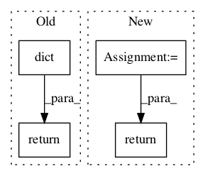

4ef810643f162aebb1d9efd153a82e0dc9e9094e,garage/tf/policies/categorical_conv_policy.py,CategoricalConvPolicy,dist_info_sym,#CategoricalConvPolicy#Any#Any#Any#,75

Before Change
state_info_vars=None,
name="dist_info_sym"):
with enclosing_scope(self._name, name):
return dict(
prob=L.get_output(self._l_prob,
{self._l_obs: tf.cast(obs_var, tf.float32)}))
@overrides
def dist_info(self, obs, state_infos=None):
return dict(prob=self._f_prob(obs))
After Change
with tf.name_scope(self._prob_network_name, [obs_var]):
prob = L.get_output(
self._l_prob, {self._l_obs: tf.cast(obs_var, tf.float32)})
return dict(prob)
@overrides
def dist_info(self, obs, state_infos=None):
return dict(prob=self._f_prob(obs))
In pattern: SUPERPATTERN
Frequency: 3
Non-data size: 4
Instances
Project Name: rlworkgroup/garage
Commit Name: 4ef810643f162aebb1d9efd153a82e0dc9e9094e
Time:
Author: null
File Name: garage/tf/policies/categorical_conv_policy.py
Class Name: CategoricalConvPolicy
Method Name: dist_info_sym
Project Name: rlworkgroup/garage
Commit Name: d19e9ab3b446e595c72e03fbc03684927d77526b
Time:
Author: null
File Name: src/garage/tf/policies/categorical_mlp_policy.py
Class Name: CategoricalMLPPolicy
Method Name: dist_info
Project Name: stellargraph/stellargraph
Commit Name: bcf6d0a188ee9ba868c1de01c347f813e3aaa35c
Time:
Author: null
File Name: stellargraph/mapper/full_batch_generators.py
Class Name: FullBatchNodeGenerator
Method Name: flow